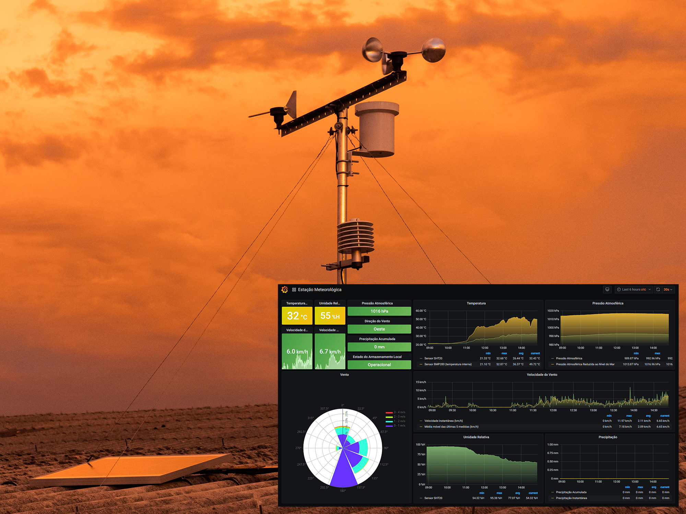
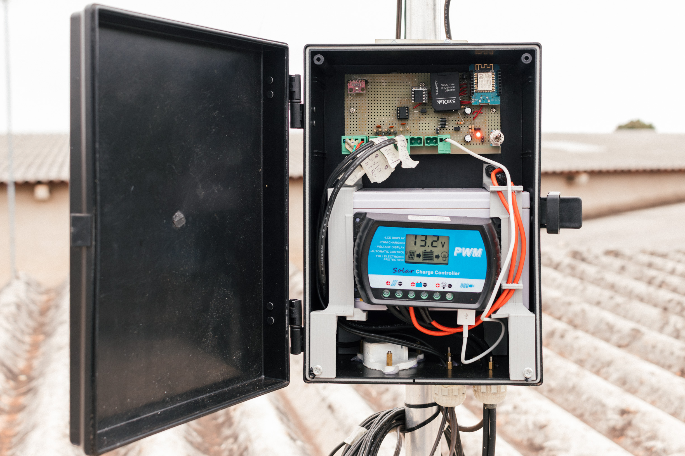
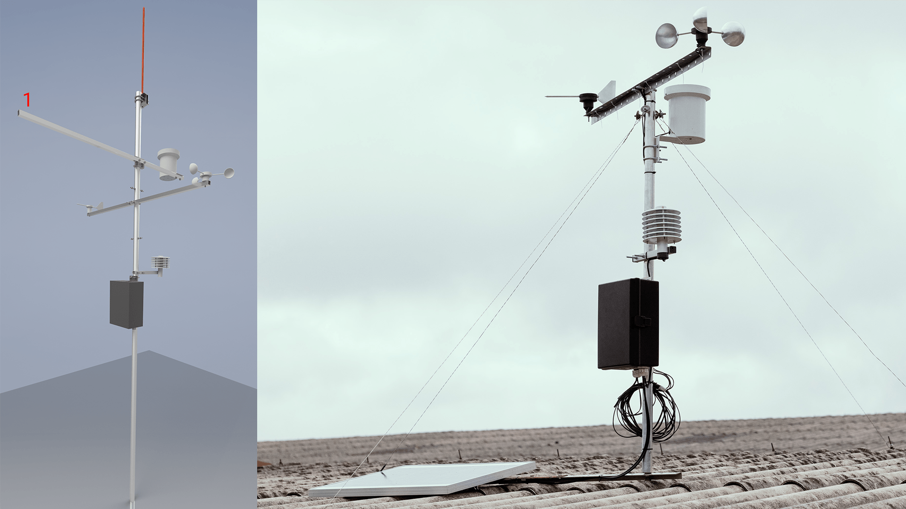
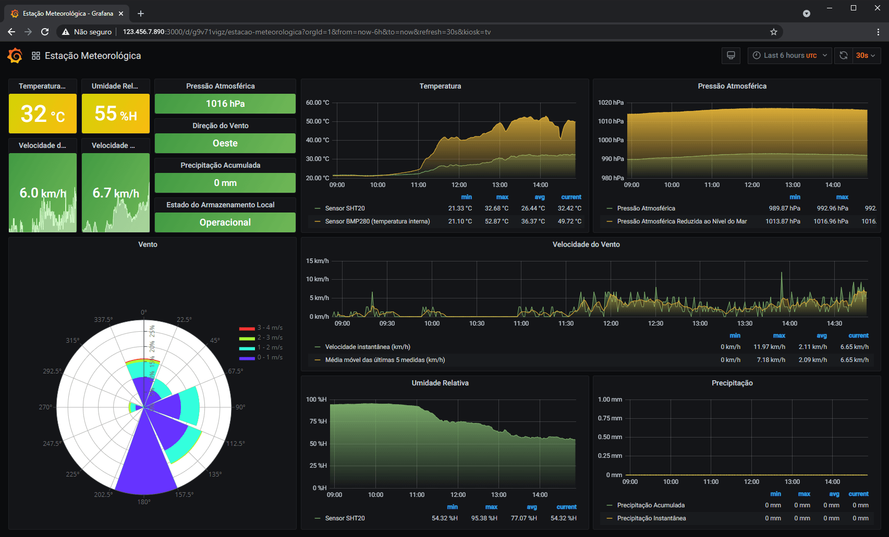

Esse projeto tem por objetivo o desenvolvimento de uma plataforma de dados meteorológicos composta por estações meteorológicas, banco de dados e interface gráfica para análise e monitoramento. Espera-se com esse trabalho formar uma base de dados que permitirá a elaboração de estudos e previsão de geração de energia solar que podem ser aplicados para verificar a viabilidade de instalação de usinas solares, essa plataforma também poderá ser instalada junto de uma unidade geradora para auxiliar no monitoramento de geração, previsões e auxílio na tomada de decisões. Por se tratar de um projeto open source, almeja-se também contribuir com a redução de obstáculos e custos para disseminação e divulgação tecnológica desse tipo de tecnologia.


Seguindo os conceitos de sensor autônomo e internet das coisas (IoT), foi projetada e construída uma estação meteorológica com microcontrolador ESP8266, programado em C/C++® no ambiente Arduino®, e inicialmente com os sensores de direção do vento, temperatura, umidade, pressão, pluviômetro e anemômetro, posteriormente serão implementados sensores de radiação solar direta e global, através de comunicação serial também é possível a implementação de sensores para monitorar a geração de energia, a estação processa os dados desses sensores, envia para internet através de conexão Wi-Fi® e também armazena localmente em cartão de memória.
Os esquemas elétricos para montagem da estação podem ser acessados no diretório esquema-eletrico e os códigos para os microcontroladores estão no diretório software, no projeto o circuito foi confeccionado usando uma placa ilhada, abaixo estão as tabelas com materiais necessários, esses sistemas foram integrados e montados na estrutura da estação, como pode ser visto nas imagens, os arquivos com as peças e montagem com o programa Inventor estão no diretório estruturas, também devem ser inseridos em breve os arquivos do projeto/desenhos técnicos em outros formatos.
Tabela 1: Lista de componentes eletrônicos e alojamentos da Estação Meteorológica.
| Quantidade | Componente | Valor unitário (R$) |
|---|---|---|
| 1 | Bateria Estacionária 7Ah | 109,90 |
| 1 | Painel Solar Fotovoltaico 30W | 189,00 |
| 1 | Controlador de Carga RTD1230 30A 12/24V | 170,00 |
| 2 | Conector MC4 Painel Solar | 10,00 |
| 2 | Metro cabo 4 mm² | 5,00 |
| 1 | Metro fio 2,5 mm² flexível | 2,00 |
| 3 | Metro Cabo flexível 26 AWG | 0,37 |
| 1 | Caixa Plástica PB-255/2 | 79,90 |
| 1 | Pluviômetro | 344,61 |
| 1 | Indicador de direção do vento | 284,63 |
| 1 | Anemômetro | 263,970 |
| 1 | Sensor de temperatura e umidade SHT20 | 297,23 |
| 1 | Alojamento para sensor e temperatura e umidade | 250,74 |
| 1 | RTC DS3231 | 22,50 |
| 1 | Sensor de pressão e temperatura BMP280 | 14,90 |
| 4 | Diodo 1N4007 | 0,10 |
| 4 | Borne Conector F 2EDGK-5,0 - 2 Vias | 1,99 |
| 1 | Borne Conector F 2EDGK-5,0 - 4 Vias | 3,70 |
| 4 | Borne Conector M 2EDGVC-5,0 4P 180º | 1,75 |
| 1 | Wemos ESP8266 | 50,00 |
| 1 | ATtiny85 DIP8 | 17,00 |
| 1 | Soquete DIP8 | 3,00 |
| 1 | Mini chave HH Alavanca SMTS102 2 Posições | 2,70 |
| 1 | Barra de Pinos 40 vias 11,2mm 180 graus | 1,00 |
| 1 | Barra de soquete header fêmea 40 vias 180 graus | 1,65 |
| 1 | Cartão microSD com adaptador SD 8GB | 29,9 |
| 2 | Capacitor eletrolítico 470uF | 0,50 |
| 5 | Capacitor cerâmico 100nF | 0,10 |
| 1 | Resistor 220 Ohm 1/4W | 0,10 |
| 2 | Resistor 330 Ohm 1/4W | 0,10 |
| 2 | Resistor 1k Ohm 1/4W | 0,10 |
| 1 | Resistor 10k Ohm 1/4W | 0,10 |
| 1 | Resistor 47k Ohm 1/4W | 0,10 |
| 1 | Placa padrão tipo ilha 10x15 mm | 14,00 |
| 1 | Peças impressas em 3D | 50,00 |
Tabela 2: Lista de componentes da estrutura da estação meteorológica*.
| Quantidade | Componente | Valor unitário (R$) |
|---|---|---|
| 1 | 2,5m Tubo redondo alumínio 1.1/4" X 1/16" (31,75mm X 1,58mm) | 39,00 |
| 1 | 3m Tubo quadrado alumínio 3/4 X 1/16 (1,9cm X 1,58mm) | 25,00 |
| 1 | Chapa de aço 2mmx80x60mm | 5,00 |
| 1 | Haste De Cobre Puro 10 mm X 500 mm | 50,00 |
| 1 | Borracha espessura 1x80x20mm | 5,00 |
| 3 | Espaçador m3 x 15mm | 0,30 |
| 7 | Parafuso m3 x 15mm | 0,12 |
| 7 | Parafuso m3 x 6mm | 0,10 |
| 1 | Parafuso m5 x 16mm | 0,20 |
| 2 | Barra roscada 1/4 x 100mm | 2,50 |
| 2 | Parafuso sextavado 1/4 x 16mm | 0,30 |
| 2 | Parafuso sextavado 1/4 x 30mm | 0,30 |
| 24 | Porca sextavada 1/4 | 0,10 |
| 20 | Ruela de metal m6 ou 1/4 | 0,15 |
| 2 | Ruela de metal m3 | 0,10 |
| 4 | Ruela de borracha m6 ou 1/4 | 0,25 |
| 2 | Anel de borracha m6 | 0,15 |
| 6 | Abraçadeira U Vergalhão bitola 1 polegada 80mm rosca 1 quarto (Part. 0070.1) | 6,00 |
| 4 | Abraçadeira suporte (Part. 0070.2) | 4,10 |
*Observações:


O banco de dados e a interface de usuário foram implementados em um Raspberry Pi® utilizado como servidor, onde um algoritmo em Python® faz o recebimento e processamento dos dados que são colocados em banco InfluxDB®, nesse servidor foi implementada com Grafana® uma interface gráfica que é acessada por usuários através de um navegador web, sendo apresentados os parâmetros atualizados e séries temporais, como mostra a figura acima. No diretório weather-station-server-side é possível ver o script implementado e a documentação que apresenta como fazer a implementação dessa parte do projeto.
Tabela 3: Lista de Materiais para o Servidor.
| Quantidade | Componente | Valor unitário (R$) |
|---|---|---|
| 1 | Raspberry Pi 4 Model B 4GB | 640,00 |
| 1 | Fonte para Raspberry Pi 4 | 65,00 |
| 1 | Cartão de memória classe 10 16GB | 60,00 |
Para os códigos e hardware dessa versão da estação (v2), temos a estação armazenando localmente, em um arquivo por dia, em horário UTC, a seguinte string com dados separados por vírgula (CSV):
20210811155149,37.17,99830.05,19.43,63.45,E,3.99,1.00,snr,snr
Contendo 10 parâmetros, sendo 1 de tempo e 9 medidas, após armazenar localmente esses parâmetros, a estação meteorológica concatena um parâmetro a mais que é o status da gravação local, um número inteiro que pode ser 1, 2 ou 3, que respectivamente significam "ok, armazenamento local operacional", "não conseguiu iniciar o cartão de memória e consequentemente não armazenou os dados localmente", "iniciou o cartão de memória, mas não conseguiu armazenar os dados". A string com 11 dados separados por vírgula e transmitida por MQTT é como o exemplo a seguir:
20210811155149,37.17,99830.05,19.43,63.45,E,3.99,1.00,snr,snr,1
Tabela 1: Descrição dos dados.
| Dado | Microcontrolador | Sensor | Posição no CSV | Nome no banco de dados | Tipo no banco de dados | Unidade de medida no CSV | Unidade de medida no Banco de dados | Observação |
|---|---|---|---|---|---|---|---|---|
| Data e Horário da medida | ESP8266 | ---- | 1 | ---- | ---- | ---- | ---- | No CSV está no formato AAAAMMDDhhmmss* |
| Temperatura | ESP8266 | BMP280 | 2 | temperature_bmp | float | °C | °C | ---- |
| Pressão | ESP8266 | BMP280 | 3 | pressure_bmp | float | Pa | hPa | ---- |
| Temperatura | ESP8266 | SHT20 | 4 | temperature_sht | float | °C | °C | ---- |
| Umidade | ESP8266 | SHT20 | 5 | humidity_sht | float | %H | %H | ---- |
| Direção do Vento | ATtiny85 | Wind Vane | 6 | wind_direction | int | Direção em ponto cardeal | Direção em graus | ---- |
| Velocidade do vento | ATtiny85 | Anemômetro | 7 | anemometer | float | Km/h | Km/h | ---- |
| Precipitação | ATtiny85 | Pluviômetro | 8 | pluviometer_raw | float | mm | mm | ---- |
| Sensor Solar 1 | ATtiny85 Solar | ---- | 9 | serial_sensor1 | int | ---- | ---- | ---- |
| Sensor Solar 2 | ATtiny85 Solar | ---- | 10 | serial_sensor2 | int | ---- | ---- | ---- |
| Status memória SD | ESP8266 | ---- | 11 | sd_memory_status | int | ---- | ---- | 1 = Ok, 2 = erro em SD begin, 3 = erro na escrita de dados |
* Descrição do formato de data e horário no CSV
AAAA = ano, quatro dígitos
MM = mês, dois dígitos
DD = dia, dois dígitos
hh = hora, dois dígitos 0 até 24
mm = minutos, dois dígitos
ss = segundos, dois dígitos
* Serial Not Received ("snr")
Quanto o ESP8266 solicita os dados e eles não são recebidos ou chegam danificados, então é retornado esse valor snr, e quando esse valor chega no script em Python, ele é interpretado como null, portanto não é armazenado essa medida no banco de dados.
Hoje o acesso aos dados pode ser feito acessando diretamente o banco de dados InfluxDB ou via Grafana, mas seria interessante posteriormente ser desenvolvida uma API onde sejam cadastrados usuários e esses cadastrados possam fazer o acesso aos dados dentro de parâmetros específicos, etc, permitindo automação do processamento de dados ou estudos com scripts.
Se tiver servidor/VPS pode ser implementada alguma interface, página web, aberta em que as pessoas possam acessar e visualizar os dados, por exemplo, das últimas 24h, talvez isso pode ser feito com Grafana, tornando o acesso para visualização público, ou deixando publico um usuário e senha sem permissões administrativas, para apenas visualização ou tentar as opções de share a dashboard.
Implementar Backup das informações que hoje estão no cartão de memória do Raspberry Pi, que se queimar, todas as informações são perdidas.
Implementar recursos de segurança como HTTPs, criptografias e demais recursos que algum profissional da área ou usuário possam recomendar.
No final do código esp8266.ino tem uma linha com a seguinte operação: sleep_time = abs(59000 - sleep_time);, é recomendado, para evitar passar o limite de tráfego do MQTT em possível sincronização das estações, variar o valor do 59000 para cada estação adicionada, para a estação 1 foi deixado em 60000, a estação 2 em 59000.
Esse projeto foi desenvolvido por Romildo C Marques¹, quando aluno de engenharia física (UNILA), sendo orientado pelo prof. Oswaldo Hideo Ando Junior² (GPEnSE) da Universidade Federal da Integração Latino-Americana (UNILA).
Contato¹: romildodcm@gmail.com
Contato²: oswaldo.junior@unila.edu.br
Este projeto foi desenvolvido com apoio e fomento de:
Aos amigos e familiares pelo apoio;
Ao professor Oswaldo Hideo Ando Junior pela orientação;
Ao professor Joylan Nunes Maciel por auxíliar com banco de dados;
Ao Lucas Teske (@racerxdl) que apresentou e recomendou as tecnologias InfluxDB e Grafana.